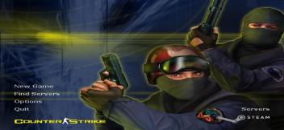

Hostage Rescue (укр. Порятунок заручників) — контртерористи повинні знайти заручників і вивести їх із зони утримання, тоді як терористи — утримати заручників. Контртерористи перемагають, якщо до закінчення часу раунду вони встигають вивести заручників у вказану точку на карті, або убивши всіх терористів. Терористи ж перемагають, якщо всі заручники не будуть виведені до закінчення раунду, або всі контртеристи будуть убиті. Після супроводження заручників в точку порятунку, гравцеві контртерористів, який вивів їх, дається по 300 $ за кожного врятованого заручника. Зазвичай карти для цього типу гри мають префікс cs_. Bomb / Defuse (укр. Замінувати / Знешкодити) — головним завданням для команди терористів є закласти бомбу та не допустити її розмінування командою контртерористів. Завдання для контртерористів полягає в тому, щоб не дати встановити бомбу або розмінувати її у випадку встановлення. Бомбу несе один з членів команди терористів. Він може її скинути, як звичайну зброю, для того щоб її підібрав інший гравець з його команди. Гравець з бомбою на радарі терористів при цьому відображається точкою, що блимає. Після закладання бомби гравцям обох команд передається повідомлення «The bomb has been planted — Бомбу було активовано». У CT є можливість скоротити час розмінування бомби, купивши Defuse Kit (укр. Саперний набір), з яким він складає 6 секунд (без нього — 11 секунд). Час закладки бомби триває всього 3 секунди. На переважній кількості турнірів Counter-Strike граються мапи типу Bomb/Defuse. Зазвичай такі карти мають префікс de_. IP Assassination (укр. Вбивство VIP) — завданням терористів є вбити VIP-гравця (у загальному випадку, не дати йому врятуватися), яким стає один з гравців команди контртерористів. При цьому у VIP немає можливості купити зброю, патрони або спорядження, проте він має 200 % броні, бронежилет без шолома і стандартний пістолет команди контртерористів (HK USP). Завдання CT — довести VIP до зони порятунку. Карти цього сценарію мають префікс as_. Єдиною картою такого сценарію в офіційному наборі CS є as_oilrig.
